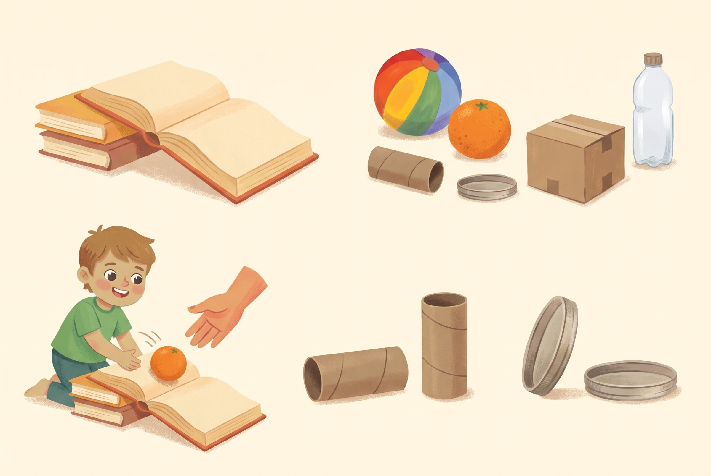

Necesitás: un libro grande apoyado sobre uno o dos libros (una rampa bajita), una pelota, una naranja, un rollo de papel higiénico vacío, una tapa de frasco, una caja chica y una botella de plástico vacía y tapada.

| Objeto | Yo creo que… | Lo que pasó |
|---|---|---|
| Pelota | ||
| Naranja | ||
| Rollo acostado | ||
| Rollo parado | ||
| Tapa de canto | ||
| Tapa acostada | ||
| Caja | ||
| Botella acostada |
En cada casillero escribí o dibujá: rueda, se desliza o se queda quieta.
El concepto. Rodar es girar alrededor de un eje. Una pelota toca el piso en un solo punto, y el menor empujón la hace girar. Un cubo apoya una cara entera: para darlo vuelta hay que levantarlo por encima de un borde. El bebé hace lo mismo que la pelota: gira alrededor de una línea imaginaria que va de la cabeza a los pies. Cuando lleva la cabeza y el hombro más allá de su base de apoyo, su propio peso termina el giro.
El hito. Muchos bebés empiezan a girar entre los 4 y los 6 meses, más o menos. Muchas veces aparece primero de boca abajo a boca arriba, pero no siempre. Cada bebé tiene su ritmo; ante cualquier duda, lo mejor es consultar al pediatra.
Seguridad. Cuando un bebé empieza a girar, ya no se lo deja solo en la cama, el cambiador o el sillón. El lugar más seguro para jugar es el piso. Para dormir, siempre boca arriba.
Para charlar después de leer: ¿Qué otras cosas redondas hay en casa? ¿Por qué las ruedas de los autos son redondas y no cuadradas? ¿Cómo eras vos de bebé? Busquen juntos una foto.